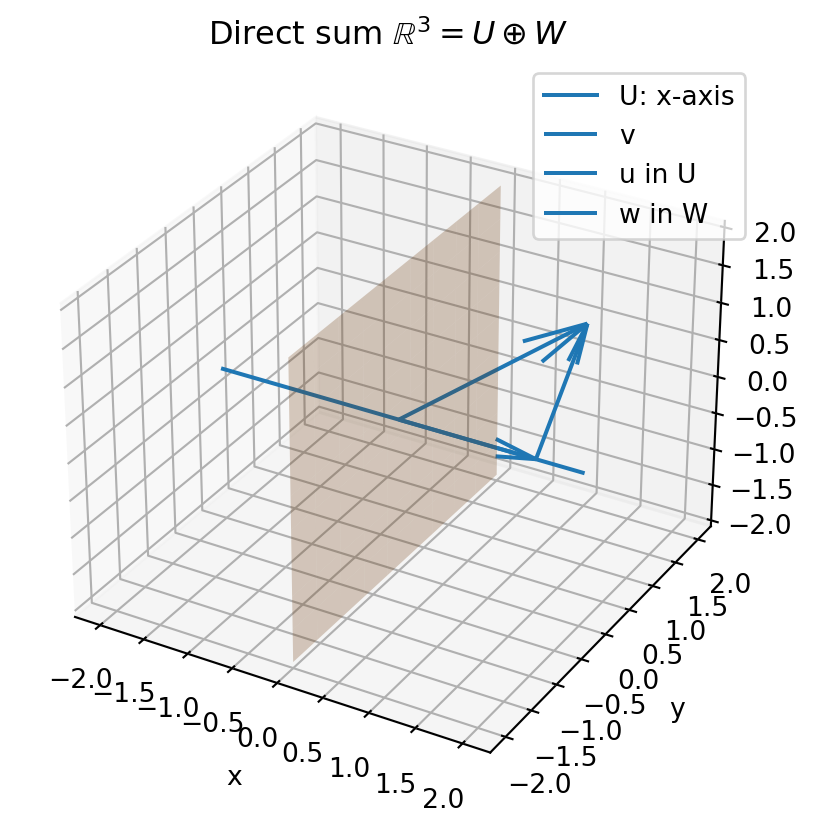

Code
import sympy as sp
A = sp.Matrix([
[0, 0, 2, 8],
[1, 5, 2, -5],
[2, 10, 6, -2]
])
A_rref, pivots = A.rref()
A_rref, pivots(Matrix([
[1, 5, 0, -13],
[0, 0, 1, 4],
[0, 0, 0, 0]]),
(0, 2))From columns to functions, polynomials, matrices, quotients, and tensors
Guiding question.
What is the same about column vectors, polynomials, functions, matrices, and signals?
In Chapter 1, a matrix was a machine for organizing and solving linear systems. In Chapter 2, vectors became objects we could add, scale, combine, and visualize.
This chapter takes the next step. A vector does not have to be a column of numbers. A vector can be a polynomial. A vector can be a function. A vector can be a matrix. A vector can even be a linear transformation.
The central idea is simple:
A vector space is a world in which addition and scalar multiplication behave correctly.
Once we know we are in such a world, the same language works everywhere: subspaces, spans, direct sums, linear maps, kernels, images, quotient spaces, matrices, and tensor products.
This chapter keeps a story-driven style, but the definitions and theorems are precise. The goal is to help you move among three viewpoints:
Use Python, MATLAB, or AI tools to check examples, but keep the mathematical questions precise. For example, instead of asking “solve this,” ask:
Find a basis for the kernel, find a basis for the image, and explain why the dimensions are consistent.
The word vector often brings to mind an arrow or a column such as
\[ \begin{bmatrix}2\\-1\\4\end{bmatrix}. \]
But linear algebra is more flexible. The important question is not “Is this object drawn as an arrow?” The important question is:
Can we add two such objects, and can we multiply one by a scalar, while staying in the same collection?
Let \(\mathbb F\) be a field. A vector space, or linear space, over \(\mathbb F\) is a nonempty set \(V\) together with two operations:
These operations satisfy the following axioms for all \(u,v,w\in V\) and all \(a,b\in\mathbb F\):
\[ \begin{aligned} u+v &= v+u,\\ (u+v)+w &= u+(v+w),\\ u+0 &= u,\\ u+(-u)&=0,\\ a(u+v)&=au+av,\\ (a+b)u&=au+bu,\\ a(bu)&=(ab)u,\\ 1u&=u. \end{aligned} \]
The elements of \(V\) are called vectors, even if they are functions, polynomials, matrices, or transformations.
The axioms look long, but the message is short: addition and scaling must behave the way they do in \(\mathbb R^n\).
In every vector space \(V\) over \(\mathbb F\),
\[ 0u=0,\qquad c0=0,\qquad (-1)u=-u. \]
The zero vector is unique, and the additive inverse of each vector is unique.
For example, since \(0=0+0\) in the field,
\[ 0u=(0+0)u=0u+0u. \]
Add the inverse of \(0u\) to both sides to get \(0=0u\). The other identities are similar consequences of the axioms.
Each of the following is a vector space with the natural addition and scalar multiplication:
The last example is important. If \(y_1\) and \(y_2\) both satisfy \(y''+y=0\), then every linear combination
\[ cy_1+dy_2 \]
also satisfies the same equation. That is why homogeneous linear differential equations belong naturally to linear algebra.
Let
\[ V=C([0,1]),\qquad f(t)=e^t,\qquad g(t)=\sin(\pi t). \]
For \(a,b\in\mathbb R\),
\[ h(t)=af(t)+bg(t)=ae^t+b\sin(\pi t) \]
is still continuous on \([0,1]\). Thus \(h\in V\). Once we know \(C([0,1])\) is a vector space, we can talk about spans, subspaces, linear transformations, kernels, and images in this infinite collection of functions.
To show that a set is not a vector space, we only need to find one failed rule. The most common failures are:
The set
\[ H=\{p(t)\in\mathbb R[t]:\deg p=3\} \]
is not a vector space. It does not contain the zero polynomial. It is also not closed under addition. For example,
\[ (t^3+1)+(-t^3+t)=t+1, \]
which has degree \(1\), not degree \(3\).
The set
\[ H=\{(x_1,x_2)\in\mathbb R^2:2x_1-x_2=1\} \]
is not a vector space because \((0,0)\notin H\).
The related homogeneous set
\[ L=\{(x_1,x_2)\in\mathbb R^2:2x_1-x_2=0\} \]
is a vector space. Geometrically, \(H\) is a shifted line, while \(L\) is a line through the origin.
A subspace is a vector space inside another vector space.
Let \(V\) be a vector space over \(\mathbb F\). A subset \(U\subseteq V\) is a subspace of \(V\) if:
If \(U\) is a subspace of a vector space \(V\), then \(U\) is itself a vector space using the addition and scalar multiplication inherited from \(V\).
The subspace theorem is a time saver. We do not check all eight vector-space axioms again. We only check zero, addition, and scalar multiplication.
Let
\[ \mathbb R_4[t]=\{a_0+a_1t+a_2t^2+a_3t^3+a_4t^4:a_i\in\mathbb R\}. \]
This is a subspace of \(\mathbb R[t]\).
Now consider
\[ H=\{at^4+b:a,b\in\mathbb R\}\subseteq \mathbb R_4[t]. \]
Then \(H\) is also a subspace because
\[ (at^4+b)+(ct^4+d)=(a+c)t^4+(b+d) \]
and
\[ \lambda(at^4+b)=(\lambda a)t^4+\lambda b. \]
The following are subspaces of \(\mathbb R^{n\times n}\):
For example, if \(A^T=A\) and \(B^T=B\), then
\[ (A+B)^T=A^T+B^T=A+B, \]
so \(A+B\) is symmetric. Also,
\[ (cA)^T=cA^T=cA. \]
Thus the symmetric matrices form a subspace.
The set of invertible \(n\times n\) matrices is not a subspace of \(\mathbb R^{n\times n}\). It does not contain the zero matrix. It is also not closed under addition, because \(I\) and \(-I\) are invertible, but
\[ I+(-I)=0 \]
is not invertible.
The set
\[ U=\{(x_1,x_2,x_3)\in\mathbb R^3:3x_1-5x_2+x_3=0\} \]
is a subspace of \(\mathbb R^3\). It is the solution set of a homogeneous linear equation. Equivalently,
\[ U=\ker A, \qquad A=\begin{bmatrix}3&-5&1\end{bmatrix}. \]
Kernels of linear maps are always subspaces.
By contrast,
\[ C=\{(x_1,x_2)\in\mathbb R^2:x_1\ge 0,\ x_2\ge 0\} \]
is not a subspace. It is closed under addition and nonnegative scaling, but not under multiplication by negative scalars.
The span of vectors is the set of all linear combinations of those vectors.
Let \(v_1,\ldots,v_m\in V\). A linear combination of these vectors is a vector of the form
\[ c_1v_1+c_2v_2+\cdots+c_mv_m, \qquad c_i\in\mathbb F. \]
The span is
\[ \operatorname{span}(v_1,\ldots,v_m) = \{c_1v_1+\cdots+c_mv_m:c_i\in\mathbb F\}. \]
For any vectors \(v_1,\ldots,v_m\in V\), the set \(\operatorname{span}(v_1,\ldots,v_m)\) is a subspace of \(V\).
The zero vector is obtained by taking all coefficients equal to zero. The sum of two linear combinations is another linear combination. A scalar multiple of a linear combination is also another linear combination.
Let
\[ u_1=(1,0,2),\qquad u_2=(0,1,-1). \]
Then
\[ \operatorname{span}(u_1,u_2) = \{s(1,0,2)+t(0,1,-1):s,t\in\mathbb R\} = \{(s,t,2s-t):s,t\in\mathbb R\}. \]
This is a plane through the origin. Since \(x_1=s\), \(x_2=t\), and \(x_3=2s-t\), the equation of the plane is
\[ 2x_1-x_2-x_3=0. \]
In \(\mathbb R_3[t]\), let
\[ p_1(t)=1+t,\qquad p_2(t)=t+t^2,\qquad p_3(t)=t^2+t^3. \]
A general linear combination is
\[ a(1+t)+b(t+t^2)+c(t^2+t^3) =a+(a+b)t+(b+c)t^2+ct^3. \]
So a polynomial
\[ \alpha+\beta t+\gamma t^2+\delta t^3 \]
belongs to the span exactly when there are \(a,b,c\) satisfying
\[ a=\alpha,\qquad a+b=\beta,\qquad b+c=\gamma,\qquad c=\delta. \]
Eliminating \(a,b,c\) gives
\[ \gamma=\beta-\alpha+\delta. \]
Thus span questions are often hidden linear-system questions.
Sometimes a vector space is built from two smaller subspaces.
Let \(U\) and \(W\) be subspaces of \(V\). Their sum is
\[ U+W=\{u+w:u\in U,\ w\in W\}. \]
If \(U\) and \(W\) are subspaces of \(V\), then \(U+W\) is a subspace of \(V\).
We say that \(V\) is the direct sum of \(U\) and \(W\), written
\[ V=U\oplus W, \]
if every vector \(v\in V\) can be written uniquely as
\[ v=u+w, \qquad u\in U,\quad w\in W. \]
Let \(U\) and \(W\) be subspaces of \(V\). Then
\[ V=U\oplus W \]
if and only if
\[ V=U+W \qquad\text{and}\qquad U\cap W=\{0\}. \]
Let
\[ U=\{(x,0,0):x\in\mathbb R\}, \qquad W=\{(0,y,z):y,z\in\mathbb R\}. \]
Then every vector \((a,b,c)\in\mathbb R^3\) decomposes as
\[ (a,b,c)=(a,0,0)+(0,b,c). \]
Also \(U\cap W=\{(0,0,0)\}\). Hence
\[ \mathbb R^3=U\oplus W. \]
Let
\[ U=\{(x,y,0):x,y\in\mathbb R\}, \qquad W=\{(0,y,z):y,z\in\mathbb R\}. \]
Then \(U+W=\mathbb R^3\), but
\[ U\cap W=\{(0,y,0):y\in\mathbb R\}\ne\{0\}. \]
So the decomposition is not unique. For example,
\[ (1,2,3)=(1,0,0)+(0,2,3)=(1,5,0)+(0,-3,3). \]
Let
\[ \operatorname{Sym}_n=\{A\in\mathbb R^{n\times n}:A^T=A\}, \qquad \operatorname{Skew}_n=\{A\in\mathbb R^{n\times n}:A^T=-A\}. \]
Every matrix \(A\in\mathbb R^{n\times n}\) has the decomposition
\[ A=\frac{A+A^T}{2}+\frac{A-A^T}{2}. \]
The first term is symmetric, and the second term is skew-symmetric. Their intersection is \(\{0\}\). Therefore
\[ \mathbb R^{n\times n}=\operatorname{Sym}_n\oplus \operatorname{Skew}_n. \]
This example is important because it decomposes a matrix space into two natural subspaces.
A linear transformation is a function that respects the linear structure.
Let \(V\) and \(W\) be vector spaces over \(\mathbb F\). A function
\[ T:V\to W \]
is linear if, for all \(u,v\in V\) and all \(c\in\mathbb F\),
\[ T(u+v)=T(u)+T(v), \qquad T(cu)=cT(u). \]
If \(T:V\to W\) is linear, then
\[ T(c_1v_1+\cdots+c_kv_k) = c_1T(v_1)+\cdots+c_kT(v_k). \]
In particular, \(T(0)=0\).
Differentiation. The derivative map
\[ D:\mathbb R_n[t]\to\mathbb R_{n-1}[t], \qquad D(p)=p' \]
is linear because
\[ D(ap+bq)=aD(p)+bD(q). \]
For example, if \(p(t)=3t^4-2t+1\), then
\[ D(p)=12t^3-2. \]
Trace. The trace map
\[ \operatorname{tr}:\mathbb R^{n\times n}\to\mathbb R, \qquad \operatorname{tr}(A)=a_{11}+\cdots+a_{nn} \]
is linear.
Evaluation. For \(V=C([0,1])\), the evaluation map
\[ E_{1/2}:V\to\mathbb R, \qquad E_{1/2}(f)=f(1/2) \]
is linear.
A nonlinear map. The map
\[ T:\mathbb R^n\to\mathbb R, \qquad T(x)=\|x\|^2 \]
is not linear because
\[ T(cx)=\|cx\|^2=c^2\|x\|^2, \]
which is usually not equal to \(cT(x)\).
Linear maps are understood by two fundamental subspaces: the kernel and the image.
Let \(T:V\to W\) be a linear transformation. The kernel of \(T\) is
\[ \ker(T)=\{v\in V:T(v)=0\}. \]
The image, or range, of \(T\) is
\[ \operatorname{im}(T)=\{T(v):v\in V\}\subseteq W. \]
If \(T:V\to W\) is linear, then \(\ker(T)\) is a subspace of \(V\) and \(\operatorname{im}(T)\) is a subspace of \(W\).
Let \(T:V\to W\) be linear.
Two vector spaces \(V\) and \(W\) are isomorphic, written \(V\cong W\), if there exists an invertible linear transformation
\[ T:V\to W. \]
An isomorphism means that \(V\) and \(W\) have the same linear structure, even if their elements look different.
Let
\[ D:\mathbb R_3[t]\to\mathbb R_2[t], \qquad D(p)=p'. \]
If
\[ p(t)=a+bt+ct^2+dt^3, \]
then
\[ D(p)=b+2ct+3dt^2. \]
Therefore
\[ \ker(D)=\{a:a\in\mathbb R\}=\operatorname{span}(1), \]
and
\[ \operatorname{im}(D)=\mathbb R_2[t]. \]
So \(D\) is surjective but not injective.
Let
\[ T:\mathbb R^3\to\mathbb R, \qquad T(x,y,z)=2x-y+3z. \]
Then
\[ \ker(T)=\{(x,y,z):2x-y+3z=0\}, \]
a plane through the origin. Since \(T(1/2,0,0)=1\), the image contains \(1\), so
\[ \operatorname{im}(T)=\mathbb R. \]
Thus \(T\) is surjective but not injective.
Suppose we want a linear transformation whose kernel is the plane
\[ 2x-y+3z=0. \]
Use the linear functional
\[ T(x,y,z)=2x-y+3z. \]
Then \(\ker(T)\) is exactly the given plane. Any nonzero scalar multiple
\[ T_c(x,y,z)=c(2x-y+3z),\qquad c\ne 0, \]
has the same kernel.
Let \(T:\mathbb R^4\to\mathbb R^3\) be defined by \(T(x)=Ax\), where
\[ A= \begin{bmatrix} 0&0&2&8\\ 1&5&2&-5\\ 2&10&6&-2 \end{bmatrix}. \]
A row reduction gives
\[ \operatorname{rref}(A)= \begin{bmatrix} 1&5&0&-13\\ 0&0&1&4\\ 0&0&0&0 \end{bmatrix}. \]
The pivot columns are columns \(1\) and \(3\). Therefore
\[ \operatorname{im}(T)= \operatorname{span}\left\{ \begin{bmatrix}0\\1\\2\end{bmatrix}, \begin{bmatrix}2\\2\\6\end{bmatrix} \right\}. \]
To find the kernel, solve \(Ax=0\). From the rref matrix,
\[ x_1=-5x_2+13x_4, \qquad x_3=-4x_4. \]
Thus
\[ x=x_2\begin{bmatrix}-5\\1\\0\\0\end{bmatrix} +x_4\begin{bmatrix}13\\0\\-4\\1\end{bmatrix}. \]
So
\[ \ker(T)= \operatorname{span}\left\{ \begin{bmatrix}-5\\1\\0\\0\end{bmatrix}, \begin{bmatrix}13\\0\\-4\\1\end{bmatrix} \right\}. \]
For a matrix transformation \(T(x)=Ax\):
A surprising but powerful idea is that linear maps themselves can be vectors.
Let \(V\) and \(W\) be vector spaces over \(\mathbb F\). Denote by
\[ \mathcal L(V,W) \]
the set of all linear transformations from \(V\) to \(W\).
The set \(\mathcal L(V,W)\) is a vector space under pointwise operations:
\[ (S+T)(v)=S(v)+T(v), \qquad (cT)(v)=cT(v). \]
The dual space of \(V\) is
\[ V^*=\mathcal L(V,\mathbb F). \]
Its elements are called linear functionals.
A linear functional is a linear measurement. It takes a vector and returns one scalar.
Every row vector \(a^T\in\mathbb R^{1\times n}\) defines a linear functional
\[ \varphi_a(x)=a^Tx. \]
For example, if \(a=(2,-1,3)\), then
\[ \varphi_a(x,y,z)=2x-y+3z. \]
Let \(V=\mathbb R_2[t]\) with basis \((1,t,t^2)\). Define
\[ \varepsilon_0(p)=p(0), \qquad \varepsilon_1(p)=p'(0), \qquad \varepsilon_2(p)=\frac{p''(0)}{2}. \]
If
\[ p(t)=a+bt+ct^2, \]
then
\[ \varepsilon_0(p)=a, \qquad \varepsilon_1(p)=b, \qquad \varepsilon_2(p)=c. \]
These functionals recover the coordinates of \(p\) in the standard polynomial basis.
A quotient space identifies vectors that differ by a chosen subspace.
The guiding picture is this:
If \(N\) is information we decide to ignore, then \(V/N\) keeps only the information transverse to \(N\).
Let \(N\) be a subspace of a vector space \(V\). Define
\[ v\sim w \qquad\text{if and only if}\qquad v-w\in N. \]
The equivalence class of \(v\) is the coset
\[ [v]=v+N=\{v+n:n\in N\}. \]
The quotient space \(V/N\) is the set of all cosets \(v+N\). Addition and scalar multiplication are defined by
\[ [v]+[w]=[v+w], \qquad c[v]=[cv]. \]
If \(N\) is a subspace of \(V\), then \(V/N\) is a vector space. The natural projection
\[ \pi:V\to V/N, \qquad \pi(v)=[v], \]
is linear and satisfies
\[ \ker(\pi)=N. \]
If \(V\) is finite-dimensional, then
\[ \dim(V/N)=\dim(V)-\dim(N). \]
Let
\[ V=\mathbb R^2, \qquad N=\operatorname{span}\{(1,0)\}. \]
Then two vectors \((x,y)\) and \((x',y')\) are equivalent if
\[ (x,y)-(x',y')=(x-x',y-y')\in N. \]
This happens exactly when \(y=y'\). Thus the quotient \(\mathbb R^2/N\) remembers only the vertical coordinate. Therefore
\[ \mathbb R^2/N\cong \mathbb R. \]
If \(T:V\to W\) is linear, then all vectors in a coset of \(\ker(T)\) have the same image. Indeed, if \(v-w\in\ker(T)\), then
\[ T(v-w)=0, \]
so
\[ T(v)=T(w). \]
This is the idea behind the first isomorphism theorem.
Let \(T:V\to W\) be linear. Then
\[ V/\ker(T)\cong \operatorname{im}(T). \]
Define
\[ \Phi:V/\ker(T)\to \operatorname{im}(T), \qquad \Phi([v])=T(v). \]
This is well-defined because vectors in the same coset differ by an element of the kernel. The map is linear, injective, and surjective onto the image.
Every matrix defines a linear transformation. Conversely, after choosing bases, every finite-dimensional linear transformation has a matrix.
Let \(V\) and \(W\) be finite-dimensional vector spaces with ordered bases
\[ \mathcal B=(v_1,\ldots,v_n), \qquad \mathcal C=(w_1,\ldots,w_m). \]
For a linear map \(T:V\to W\), the matrix of \(T\) with respect to \(\mathcal B\) and \(\mathcal C\) is the matrix whose \(j\)-th column is the coordinate vector of \(T(v_j)\) in the basis \(\mathcal C\):
\[ [T]_{\mathcal C\leftarrow\mathcal B} = \begin{bmatrix} [T(v_1)]_{\mathcal C}&\cdots&[T(v_n)]_{\mathcal C} \end{bmatrix}. \]
The notation means: coordinates start in basis \(\mathcal B\) and land in basis \(\mathcal C\).
Let
\[ D:\mathbb R_3[t]\to\mathbb R_2[t], \qquad D(p)=p'. \]
Use bases
\[ \mathcal B=(1,t,t^2,t^3), \qquad \mathcal C=(1,t,t^2). \]
Then
\[ D(1)=0, \qquad D(t)=1, \qquad D(t^2)=2t, \qquad D(t^3)=3t^2. \]
So
\[ [D]_{\mathcal C\leftarrow\mathcal B} = \begin{bmatrix} 0&1&0&0\\ 0&0&2&0\\ 0&0&0&3 \end{bmatrix}. \]
This matrix takes the coordinate vector of a polynomial in \(\mathbb R_3[t]\) and returns the coordinate vector of its derivative in \(\mathbb R_2[t]\).
Tensor products give a systematic way to build new vector spaces from old ones.
Let \(V\) and \(W\) be vector spaces over \(\mathbb F\). The tensor product \(V\otimes W\) is a vector space generated by symbols
\[ v\otimes w, \qquad v\in V,\ w\in W, \]
subject to the bilinear rules
\[ (v_1+v_2)\otimes w=v_1\otimes w+v_2\otimes w, \]
\[ v\otimes(w_1+w_2)=v\otimes w_1+v\otimes w_2, \]
and
\[ (cv)\otimes w=v\otimes(cw)=c(v\otimes w). \]
If \(\mathcal A=(a_1,\ldots,a_m)\) is a basis of \(V\) and \(\mathcal B=(b_1,\ldots,b_n)\) is a basis of \(W\), then
\[ \{a_i\otimes b_j:1\le i\le m,\ 1\le j\le n\} \]
is a basis of \(V\otimes W\). Therefore
\[ \dim(V\otimes W)=\dim(V)\dim(W). \]
There is a natural isomorphism
\[ \mathbb R^m\otimes\mathbb R^n\cong \mathbb R^{m\times n}. \]
A simple tensor \(v\otimes w\) corresponds to the rank-one matrix
\[ vw^T. \]
If
\[ v=\begin{bmatrix}v_1\\ \vdots\\ v_m\end{bmatrix}, \qquad w=\begin{bmatrix}w_1\\ \vdots\\ w_n\end{bmatrix}, \]
then
\[ v\otimes w \longleftrightarrow \begin{bmatrix} v_1w_1&\cdots&v_1w_n\\ \vdots&\ddots&\vdots\\ v_mw_1&\cdots&v_mw_n \end{bmatrix}. \]
For matrices \(A=[a_{ij}]\in\mathbb R^{m\times n}\) and \(B\in\mathbb R^{p\times q}\), the Kronecker product is
\[ A\otimes B= \begin{bmatrix} a_{11}B&a_{12}B&\cdots&a_{1n}B\\ a_{21}B&a_{22}B&\cdots&a_{2n}B\\ \vdots&\vdots&\ddots&\vdots\\ a_{m1}B&a_{m2}B&\cdots&a_{mn}B \end{bmatrix} \in\mathbb R^{mp\times nq}. \]
This operation appears in numerical linear algebra, signal processing, quantum computing, graph products, and multidimensional data.
Let
\[ A=\begin{bmatrix}1&2\\3&4\end{bmatrix}, \qquad B=\begin{bmatrix}0&5\\6&7\end{bmatrix}. \]
Then
\[ A\otimes B= \begin{bmatrix} 1B&2B\\ 3B&4B \end{bmatrix} = \begin{bmatrix} 0&5&0&10\\ 6&7&12&14\\ 0&15&0&20\\ 18&21&24&28 \end{bmatrix}. \]
We now use Python to compute kernels, images, and Kronecker products.
import sympy as sp
A = sp.Matrix([
[0, 0, 2, 8],
[1, 5, 2, -5],
[2, 10, 6, -2]
])
A_rref, pivots = A.rref()
A_rref, pivots(Matrix([
[1, 5, 0, -13],
[0, 0, 1, 4],
[0, 0, 0, 0]]),
(0, 2))The pivot columns are indexed from zero in Python. Therefore pivot indices (0, 2) mean columns \(1\) and \(3\) mathematically.
image_basis = A.columnspace()
kernel_basis = A.nullspace()
image_basis, kernel_basis([Matrix([
[0],
[1],
[2]]),
Matrix([
[2],
[2],
[6]])],
[Matrix([
[-5],
[ 1],
[ 0],
[ 0]]),
Matrix([
[13],
[ 0],
[-4],
[ 1]])])A = sp.Matrix([[1, 2], [3, 4]])
B = sp.Matrix([[0, 5], [6, 7]])
sp.kronecker_product(A, B)\(\displaystyle \left[\begin{matrix}0 & 5 & 0 & 10\\6 & 7 & 12 & 14\\0 & 15 & 0 & 20\\18 & 21 & 24 & 28\end{matrix}\right]\)
The following code draws two coordinate subspaces in \(\mathbb R^3\): the \(x\)-axis and the \(yz\)-plane.
import numpy as np
import matplotlib.pyplot as plt
fig = plt.figure(figsize=(6, 5))
ax = fig.add_subplot(111, projection='3d')
# x-axis subspace U
x = np.linspace(-2, 2, 100)
ax.plot(x, 0*x, 0*x, label='U: x-axis')
# yz-plane subspace W
Y, Z = np.meshgrid(np.linspace(-2, 2, 10), np.linspace(-2, 2, 10))
X = np.zeros_like(Y)
ax.plot_surface(X, Y, Z, alpha=0.25)
# vector and decomposition
v = np.array([1.5, 1.0, 1.2])
u = np.array([1.5, 0.0, 0.0])
w = np.array([0.0, 1.0, 1.2])
ax.quiver(0, 0, 0, *v, length=1, normalize=False, label='v')
ax.quiver(0, 0, 0, *u, length=1, normalize=False, label='u in U')
ax.quiver(u[0], u[1], u[2], *w, length=1, normalize=False, label='w in W')
ax.set_xlabel('x')
ax.set_ylabel('y')
ax.set_zlabel('z')
ax.set_title(r'Direct sum $\mathbb{R}^3=U\oplus W$')
ax.legend()
plt.show()
This chapter expanded the meaning of vector beyond columns of numbers.
A vector space is any collection where addition and scalar multiplication behave correctly. A subspace is a smaller vector space inside a larger one. A span is the subspace generated by a list of vectors. A direct sum means every vector has a unique decomposition. A linear transformation is a structure-preserving map. Its kernel measures what collapses to zero, while its image measures what outputs are possible. The dual space consists of scalar-valued linear measurements. A quotient space collapses a subspace to zero. A matrix representation describes a linear transformation after bases are chosen. A tensor product builds larger vector spaces from smaller ones.
The main lesson is this:
Linear algebra is not only about solving systems. It is about recognizing structure that survives across many different kinds of mathematical objects.
Explain why \(\mathbb R_3[t]\) is a vector space but the set of polynomials of degree exactly \(3\) is not.
Give one example of a vector space whose elements are functions and one example whose elements are matrices.
Explain why a line in \(\mathbb R^2\) is a subspace if and only if it passes through the origin.
What is the difference between \(U+W\) and \(U\oplus W\)?
In your own words, explain what the kernel of a linear map measures.
Determine whether each set is a subspace of the indicated vector space.
\(\{(x,y,z)\in\mathbb R^3:x+y+z=0\}\) in \(\mathbb R^3\).
\(\{(x,y,z)\in\mathbb R^3:x+y+z=1\}\) in \(\mathbb R^3\).
\(\{A\in\mathbb R^{2\times 2}:\operatorname{tr}(A)=0\}\) in \(\mathbb R^{2\times 2}\).
Let
\[ u_1=(1,0,2),\qquad u_2=(0,1,-1). \]
Find an equation for \(\operatorname{span}(u_1,u_2)\).
\[ T:\mathbb R^3\to\mathbb R, \qquad T(x,y,z)=x+2y-z. \]
Find \(\ker(T)\) and \(\operatorname{im}(T)\).
\[ A=\begin{bmatrix} 1&2&3\\ 2&4&6\\ 1&1&1 \end{bmatrix}. \]
Find a basis for the column space and a basis for the null space.
Let \(D:\mathbb R_4[t]\to\mathbb R_3[t]\) be the derivative map. Find \(\ker(D)\) and \(\operatorname{im}(D)\).
Let \(V=\mathbb R^2\) and \(N=\operatorname{span}\{(1,1)\}\). Describe geometrically what the cosets in \(V/N\) look like.
Compute
\[ \begin{bmatrix}1&-1\\2&0\end{bmatrix} \otimes \begin{bmatrix}3&4\\5&6\end{bmatrix}. \]
Prove that the intersection of two subspaces of \(V\) is a subspace of \(V\).
Prove that the sum \(U+W\) of two subspaces is a subspace.
Prove the direct-sum test: \(V=U\oplus W\) if and only if \(V=U+W\) and \(U\cap W=\{0\}\).
Prove that the kernel of a linear transformation is a subspace.
Prove that the image of a linear transformation is a subspace.
Prove that if \(T:V\to W\) is linear and injective, then \(T\) maps linearly independent sets to linearly independent sets.
Use sympy to compute the rref, column space, and null space of the matrix in Exercise 9.
Write a Python function that takes a matrix \(A\) and returns rank(A), nullity(A), and verifies the rank-nullity formula.
Use Python to compute several Kronecker products and observe their sizes.
Use Python to represent the derivative map \(D:\mathbb R_4[t]\to\mathbb R_3[t]\) as a matrix.
Ask an AI tool: “Is every subset closed under addition a subspace?” Then critique the answer and give a counterexample.
Ask an AI tool to explain quotient spaces using \(\mathbb R^2\) modulo a line. Verify whether the explanation correctly identifies cosets.
Ask an AI tool to compute a kernel and image for a matrix. Then verify the result using row reduction.
The set is a subspace because it is the solution set of the homogeneous equation \(x+y+z=0\).
The set is not a subspace because \((0,0,0)\) does not satisfy \(x+y+z=1\).
The set is a subspace. The zero matrix has trace zero. Also,
\[ \operatorname{tr}(A+B)=\operatorname{tr}(A)+\operatorname{tr}(B) \]
and
\[ \operatorname{tr}(cA)=c\operatorname{tr}(A). \]
A general vector in the span is
\[ s(1,0,2)+t(0,1,-1)=(s,t,2s-t). \]
Thus \(x=s\), \(y=t\), and \(z=2s-t=2x-y\). Therefore the equation is
\[ 2x-y-z=0. \]
The kernel is
\[ \ker(T)=\{(x,y,z):x+2y-z=0\}. \]
Solving for \(x\) gives \(x=-2y+z\), so
\[ (x,y,z)=y(-2,1,0)+z(1,0,1). \]
Therefore
\[ \ker(T)=\operatorname{span}\{(-2,1,0),(1,0,1)\}. \]
Since \(T(1,0,0)=1\), the image contains \(1\), so
\[ \operatorname{im}(T)=\mathbb R. \]
If
\[ p(t)=a+bt+ct^2+dt^3+et^4, \]
then
\[ D(p)=b+2ct+3dt^2+4et^3. \]
The kernel consists of constant polynomials, so
\[ \ker(D)=\operatorname{span}(1). \]
Every polynomial in \(\mathbb R_3[t]\) is the derivative of some polynomial in \(\mathbb R_4[t]\), so
\[ \operatorname{im}(D)=\mathbb R_3[t]. \]
Let \(U\) and \(W\) be subspaces of \(V\). We prove \(U\cap W\) is a subspace.
First, \(0\in U\) and \(0\in W\), so \(0\in U\cap W\).
If \(a,b\in U\cap W\), then \(a,b\in U\) and \(a,b\in W\). Since \(U\) and \(W\) are subspaces, \(a+b\in U\) and \(a+b\in W\). Hence \(a+b\in U\cap W\).
If \(c\in\mathbb F\) and \(a\in U\cap W\), then \(a\in U\) and \(a\in W\). Since \(U\) and \(W\) are subspaces, \(ca\in U\) and \(ca\in W\). Hence \(ca\in U\cap W\).
Therefore \(U\cap W\) is a subspace.
Assume \(V=U\oplus W\). Then every vector of \(V\) can be written as \(u+w\), so \(V=U+W\). If \(x\in U\cap W\), then
\[ 0=0+0=x+(-x), \]
where \(x\in U\) and \(-x\in W\). By uniqueness of decomposition, \(x=0\). Thus \(U\cap W=\{0\}\).
Conversely, assume \(V=U+W\) and \(U\cap W=\{0\}\). Since \(V=U+W\), every vector can be written as \(v=u+w\). Suppose
\[ u_1+w_1=u_2+w_2. \]
Then
\[ u_1-u_2=w_2-w_1. \]
The left side belongs to \(U\), and the right side belongs to \(W\). Therefore this vector belongs to \(U\cap W=\{0\}\). Hence \(u_1=u_2\) and \(w_1=w_2\). The decomposition is unique, so \(V=U\oplus W\).